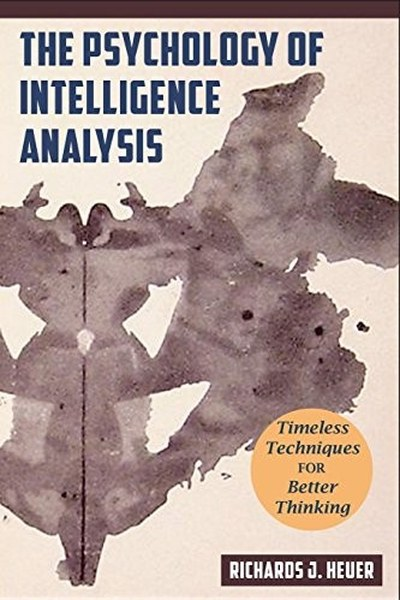

Library › Psychology & People
Psychology of Intelligence Analysis — Summary & Key Lessons

The CIA's classic on how to think clearly when the stakes are life and death.
📖 OPEN THE FULL INTERACTIVE BREAKDOWN →🌐 Read it in Hindi, Hinglish, Gujarati, Tamil & 22 more languages — free, with audio.
💡 The Big Idea
Written by a 45-year CIA veteran, this book is the definitive manual on how human cognition fails analysts — and what to do about it. Heuer shows that our perception is selective, our memory is constructive, and our judgment is anchored by assumptions we don't notice. His remedies: make assumptions explicit, generate competing hypotheses, and structure analysis so that the mind's weaknesses are compensated by method. The book is a masterclass in applied critical thinking.
🧠 The 6 Key Lessons
Lesson 1: We See What We Expect to See
Perception
Heuer's first law: perception is a hypothesis — we construct what we see from expectations as much as from evidence. Analysts (and everyone) routinely miss information that contradicts their mental model and over-weight information that confirms it. The lesson: your first reading of any situation is at least partly your own projection.
📖 Example: The famous ambiguous images (young woman / old woman) show that the same data produces different perceptions — and once you see one, it's hard to see the other. The practical edge: 'we see what we expect to see' is not a one-time decision — it's a habit that… Read the full example →
⚡ Do this: For one important situation, write what you EXPECT to see before you gather evidence. Then look for evidence that contradicts the expectation.
Lesson 2: Memory Is Reconstructed, Not Replayed
Memory
Heuer explains that memory is not a recording — it is rebuilt each time we recall, and the rebuilding is influenced by what happened since. Eyewitnesses, analysts and managers all 'remember' things that support their current narrative. The lesson: treat memory as evidence to verify, not as fact to trust.
📖 Example: Witnesses to the same event give conflicting accounts — not because they lie, but because each memory was reconstructed differently. Here's the part that usually gets missed: 'memory is reconstructed, not replayed' works quietly. You won't see it working in… Read the full example →
⚡ Do this: Recall an important past event in writing. Then ask one other person involved for their version and compare the gaps.
Lesson 3: The First Hypothesis Is a Trap
Judgment
Heuer's central finding: once we form a hypothesis, we look for confirming evidence and ignore disconfirming evidence. We rarely consider alternatives seriously. His fix: deliberately generate multiple hypotheses and test each — the technique that later became 'Analysis of Competing Hypotheses'.
📖 Example: Pearl Harbor and the Cuban Missile Crisis both featured analysts locked into one hypothesis, dismissing signals that fit a different story. The real test of this lesson is a bad day: the principle that survives a crisis, a tight deadline and a doubting… Read the full example →
⚡ Do this: For your next significant judgment, write three competing explanations. Assign evidence to each before choosing.
Lesson 4: Assumptions Are the Quiet Drivers
The Bias of Unstated Assumptions
Every analysis rests on assumptions — about actors, incentives, timelines — that are rarely stated. When an assumption is wrong, the entire analysis fails silently. Heuer's method: list every assumption explicitly before concluding anything. Naming the assumption turns it from invisible into testable.
📖 Example: Cold War analysts assumed Soviet leaders were rational actors — an assumption that shaped decades of predictions and was rarely examined. In practice, 'assumptions are the quiet drivers' shows up in tiny daily choices long before it shows up in outcomes —… Read the full example →
⚡ Do this: Write the five assumptions behind your current plan or judgment. Mark each as tested or untested — and test the untested ones.
Lesson 5: Vague Estimates Hide the Real Uncertainty
Communicating Uncertainty
Heuer shows that analysts use words like 'likely' and 'probably' with completely different numerical meanings for different readers. His fix: translate uncertainty into numbers and probabilities. If you can't quantify your confidence, you don't know how much you don't know.
📖 Example: 'Highly likely' meant 90% to one analyst and 60% to another — a communication failure that shapes decisions dangerously. Most people nod at this principle and change nothing. The gap between agreeing and acting is where the whole game is won or lost. Read the full example →
⚡ Do this: For one prediction you've made, attach a number: 'I'm 70% confident this happens by March.' Then ask what would move it to 90%.
Lesson 6: Structure Beats Willpower
The Method
Heuer's conclusion: you cannot think your way out of cognitive bias by trying harder — you must change the method. Checklists, competing hypotheses, devil's advocates and structured reviews are the only reliable defences. The professional's edge is not a better brain; it's a better process.
📖 Example: The CIA's shift to structured analytic techniques produced better estimates not because analysts got smarter, but because the process forced the questions. The uncomfortable truth about this lesson: it requires doing the boring version first — the… Read the full example →
⚡ Do this: Add one structural check to your next important decision: a second opinion, a pre-mortem, or a competing-hypothesis table.
✅ 5-Step Action Plan
- Write your expectation before gathering evidence.
- Verify one memory against another source.
- Generate three competing hypotheses for your next judgment.
- List and test the assumptions behind your current plan.
- Quantify your confidence in one prediction.
⚠️ When This Doesn't Work
Heuer's methods are the gold standard — and they were used by the very analysts who got Iraq's WMD estimate catastrophically wrong in 2003, a failure that helped launch a war. Structured techniques reduce cognitive bias; they do not eliminate it, and they cannot fix bad intelligence inputs. The caveat: better process raises the floor, but the ceiling is set by the quality of the information and the courage of the decision-makers. A beautifully structured analysis of wrong premises is a well-organized error. Process is necessary; humility is the other half.
💀 The Graveyard Proves It
🚁 The Bay of Pigs Invasion — Groupthink's $53M Masterpiece of Bad Judgment. Burn: $53M, 114 dead, 1,200 captured — the CIA's worst defeat. Read the full case study →
💬 Best Quotes from Psychology of Intelligence Analysis
- “We tend to think in terms of a single hypothesis — the one we first thought of.”
- “The mind is not a blank slate; we interpret new information in light of existing beliefs.”
- “Analysis is the art of overcoming the limits of human cognition.”
Interactive version: mark lessons as read, listen in your language, share quote cards.